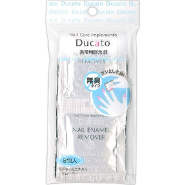

返回列表
产品名称：デュカート マイルドネイルエナメルリムーバー

シャンテイ デュカート マイルドネイルエナメルリムーバー 携帯用
メーカー シャンテイ
JANコード 4901604466079
商品の特徴
ツンとした臭いがない 無臭タイプ
- 成分・分量
- 【全成分】炭酸プロピレン、オレンジエキス、PG、酢酸トコフェロール
- 用法及び用量
- ・コットンに適量を含ませ、爪を軽く抑えるようにして拭き取ります。
・エナメル除去後、すぐにネイルエナメルを塗る場合は、乾いたティッシュ等で爪を拭いてからご使用下さい。